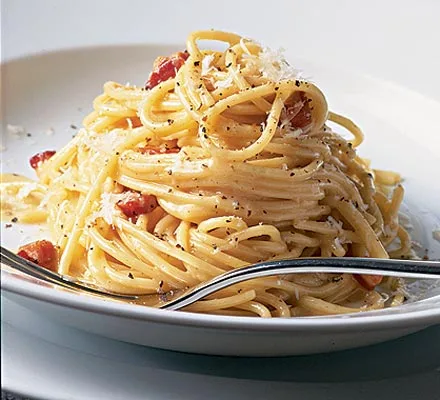

Spaghetti Carbonara

Description
Discover how to make superb spaghetti carbonara. This cheesy pasta dish is
an Italian favourite and with the right technique, you can make it perfect
every time
Ingredients
- 100g pancetta
- 50g pecorino cheese
- 50g parmesan
- 3 large eggs
- 350g spaghetti
- 2 plump garlic cloves, peeled and left whole
- 50g unsalted butter
- sea salt and freshly ground black pepper
Steps
Step 1
-
Heat the olive oil in a large heavy-based pan. Add the onions, carrots
and thyme leaves, then gently fry for 15 mins.
Step 2
-
Stir in 1.4l chicken stock, bring to a boil, cover, then simmer for 10
mins.
Step 3
-
Add the leftover roast chicken, remove half the mixture, then purée with
a stick blender. Tip back into the pan with the rest of the soup, the
peas and seasoning, then simmer for 5 mins until hot through.
Step 4
-
Mix the Greek yogurt, garlic and lemon juice together. Ladle the soup
into bowls, swirl in the garlic yogurt, then serve.